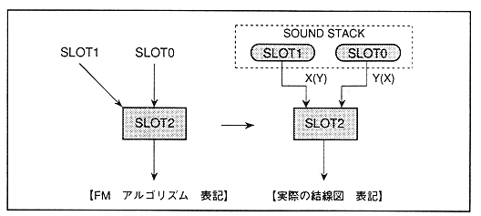
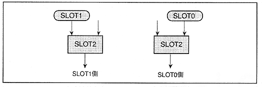

Figure 4.35 Slot 2 algorithm

∙ Since slot 2 is an input for multiple slots, there is no need to stick to the latest sample and past sample input.
∗ The value of “MDXSL” and “MDYSL” with slot 1 as the input (slot 1 side) is 1 for the slot to be modulated and 2 for the modulation.
1-2 = -1
∙ Since this satisfies condition 2 of 4.1, the MSB of "MDXSL" and "MDYSL" is
32+ (-1) = 31 = 1F H = (011111) B MSB = 0 (011111) B = 1F H for the latest sample In the past sample MSB = 1 (111111) B = 3F H
It will be.
Figure 4.36 Slot 2 algorithm (by input slot)
